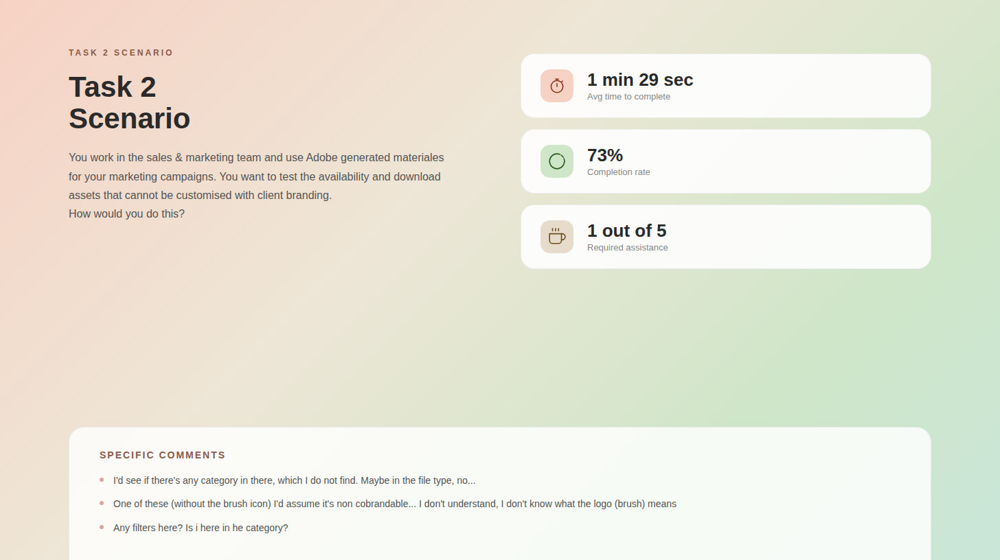
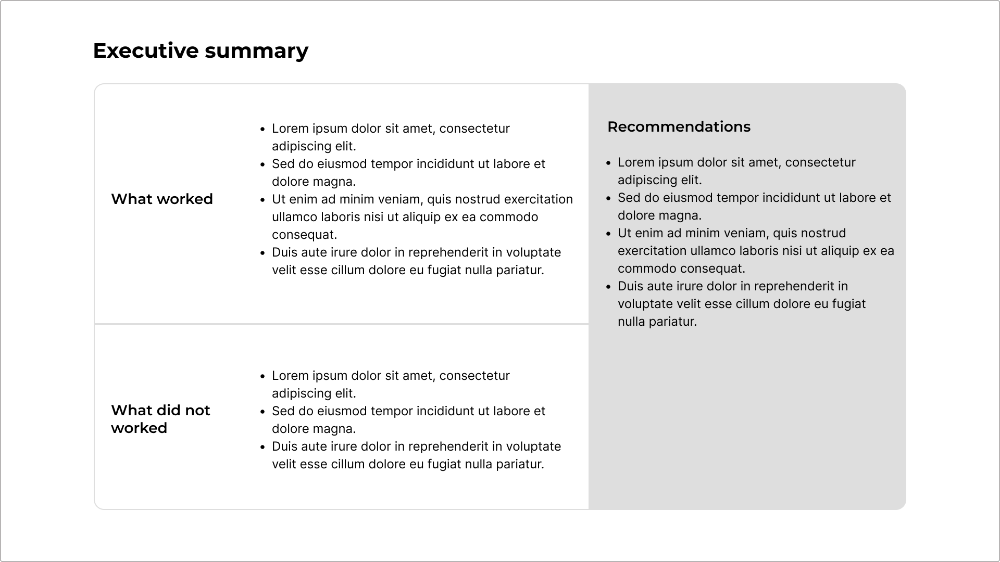

UX research & usability testing for data migration
Redesigning partner management through user research, usability testing, and iterative design.
Overview
This process was about migrating data from a legacy system into a new platform, ensuring all partner information lived in one centralized hub.
Methods
My UX Process
- Discovery & Research – Conducted qualitative interviews to understand partner workflows and uncover usability challenges.
- Usability Testing – Ran iterative usability tests, gathering feedback at each stage of the design.
- Design Iteration – Implemented improvements based on test findings, refining navigation, workflows, and content hierarchy.
- Validation & Launch – Conducted a final round of testing before launch.
My Role
I led the end-to-end research process, from scoping objectives to recruiting participants, executing interviews and usability testing, and synthesising findings into recommendations.
I acted as a bridge between the PRM vendor and Adobe, aligning technical constraints with user-facing needs to ensure feasible, user-centered solutions.
Usability Testing Process
Overview
For this usability test, I conducted two cycles. I recruited five participants for the first cycle and defined the structure of the sessions.
The tests were conducted remotely, moderated by me, with an observer. We established success criteria and post-test questions.
A participation agreement was drafted and shared with all participants prior to the test, ensuring informed consent. Additionally, we ran an internal pilot test to refine the process before launching the study.

Success Criteria
I designed a set of twelve tasks to comprehensively evaluate the PRM. The tasks were carefully selected to cover areas frequently discussed among stakeholders, ensuring that their main concerns were directly assessed.
In addition, I incorporated potential pain points that had not yet been raised but were likely to affect the user experience.

Tasks
The list of tasks participants had to complete during the test.

Partner Scoring
The rating scale was developed for each task and for each individual participant, based on the defined success criteria. In this context, the ratings are as follows:
- Complete Success = 3
- Partial Success = 2
- Success with Failure = 1
- Failure = 0

Participant Comments
Participant comments were carefully considered, ranging from body language and posture to verbal cues such as expressions like “I guess” or “I reckon” versus more confident statements like “I am sure that.”
Additionally, we recorded the time each participant took to complete each task, providing further insight into task difficulty and user performance.

Results
Based on the task scores mentioned previously, an average score was calculated for each task. This average was then used to measure effectiveness (level of success), with 0 representing Failure and 3 representing Complete Success.
Next, the average time taken per task was calculated (time on task) to further assess effectiveness. In addition, a problem log was created, taking into account all the issues and observations mentioned by the participants.

Conclusions
For the conclusions, I created a presentation designed in Figma. One section detailed each task, including its description, the average completion time, the completion rate, and the number of participants who required assistance.
Specific participant comments related to each task were also included. Additionally, the presentation featured an executive summary and a separate section with recommendations.


Likert Scale Evaluation
In addition to interviews and usability testing, I designed and ran a short Likert scale survey to capture quantitative insights. Participants were asked:
- “How satisfied are you with the PRP?”
- “Why did you give this score?”
This allowed us to measure perceived satisfaction, identify gaps between expectations and experience, and validate qualitative findings with numerical trends.
Outcomes & Impact
The usability test was conducted in two cycles, with a second round of five participants after implementing improvements. The outcomes demonstrate significant gains in completion rates, efficiency, and overall platform engagement.
Completion Rate Improvements
- Task 316.7% → 80%+
- Task 440% → 75%+
- Task 740% → 75%+
- Task 1+10% increase
- Task 2+10% increase
Participant Confidence & Behaviour
- Noticeable reduction in hesitation during responses in Cycle 2.
- More confident statements such as “I am sure that…” observed across tasks.
Time on Task
- Task 7reduced by more than 10 seconds
- Task 8reduced by more than 10 seconds
- Other tasksremained similar to Cycle 1 values
Platform Engagement & Conversions
- Higher partner traffic observed on the platform after improvements.
- Conversion rates increased, indicating better overall user experience.
Key Insights
- Iterative testing and design changes significantly improved task completion and efficiency.
- Higher confidence and reduced hesitation indicate clearer UI and better guidance.
- Business metrics such as platform traffic and conversions show positive impact beyond usability metrics.